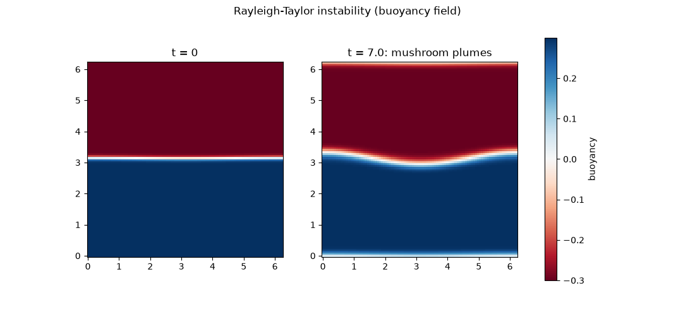

Note
Go to the end to download the full example code.
Rayleigh-Taylor plumes from a heavy-over-light interface#
A denser fluid layer sits atop a lighter one – exactly the unstable arrangement – separated by an interface with a small sinusoidal ripple. The two layers are represented not as a sharp density jump but through the Boussinesq approximation: a dimensionless buoyancy field \(b=-\delta\rho/\rho_0\) (positive where the fluid is locally lighter than the reference density), advected and diffused like vorticity but also exerting a baroclinic torque \(g\,\partial_x b\) on it wherever the density gradient is non-vertical:
with \(\mathbf{u}\) recovered from \(\omega\) exactly as in
physicskit.fluids.systems.navier_stokes. Rayleigh’s 1883 linear
stability analysis (extended by Taylor in 1950) shows that any interface
with heavy fluid sitting on light fluid under gravity \(g\) is
unconditionally unstable, growing a small ripple of wavenumber \(k\) at
rate
where \(A\) is the Atwood number setting the buoyancy jump across the
interface. This example builds that heavy-over-light arrangement with
rayleigh_taylor_ic(), checks
the early growth against
rayleigh_taylor_growth_rate(),
and then evolves the coupled equations above with
simulate_rayleigh_taylor()
well into the nonlinear regime, where the interface rolls up into the
mushroom-shaped plumes the instability is named for.
import matplotlib.pyplot as plt
import numpy as np
from physicskit.fluids.core.grid import spectral_grid
from physicskit.fluids.systems.instabilities import (
rayleigh_taylor_growth_rate,
rayleigh_taylor_ic,
simulate_rayleigh_taylor,
)
from physicskit.fluids.visualizers.flow_fields import animate_rayleigh_taylor
A rippled heavy-over-light interface#
Grow it and compare against the linear prediction#
k0 = 2 * np.pi / length
sigma_predicted = rayleigh_taylor_growth_rate(k=k0, atwood_number=atwood, g=g)
omega, buoyancy = omega0.copy(), buoyancy0.copy()
amps, times = [], []
dt, chunk = 0.01, 50
for i in range(14):
result = simulate_rayleigh_taylor(omega, buoyancy, nu=nu, kappa=kappa, g=g, dt=dt, steps=chunk, length=length)
omega, buoyancy = result["omega"], result["buoyancy"]
dev = buoyancy - buoyancy.mean(axis=0, keepdims=True)
amps.append(np.sqrt(np.mean(dev**2)))
times.append((i + 1) * dt * chunk)
amps, times = np.array(amps), np.array(times)
print(f"growth rate: linear theory sigma = {sigma_predicted:.3f}")
print(f"interface roughness grew by a factor of {amps[-1] / amps[0]:.2f} over the run")
growth rate: linear theory sigma = 0.548
interface roughness grew by a factor of 11.62 over the run
The nonlinear mushroom plumes#
X, Y, _, _, _ = spectral_grid(n, length)
fig, axes = plt.subplots(1, 2, figsize=(11, 5))
axes[0].pcolormesh(X, Y, buoyancy0, cmap="RdBu", shading="auto")
axes[0].set_title("t = 0")
axes[0].set_aspect("equal")
im1 = axes[1].pcolormesh(X, Y, buoyancy, cmap="RdBu", shading="auto")
axes[1].set_title(f"t = {times[-1]:.1f}: mushroom plumes")
axes[1].set_aspect("equal")
fig.colorbar(im1, ax=axes, label="buoyancy")
fig.suptitle("Rayleigh-Taylor instability (buoyancy field)")
plt.show()

Watching the mushroom plumes form, continuously#
Rather than a single before/after comparison, redrawing the buoyancy field every few RK4 steps shows the rippled interface rolling up into the characteristic mushroom-shaped plumes as it happens.
Check#
Linear theory for a sharp, inviscid interface: sigma = sqrt(A g k). Once the start-up transient has passed, the ripple grows exponentially at a steady rate a little below that (the interface here is diffuse and slowly widening, and the fluid viscous), until the plumes go nonlinear.
Total running time of the script: (0 minutes 8.054 seconds)